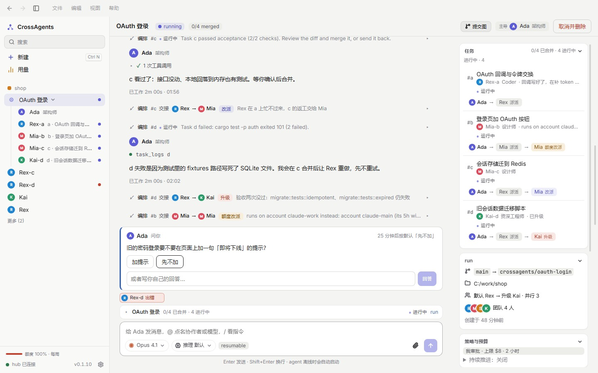
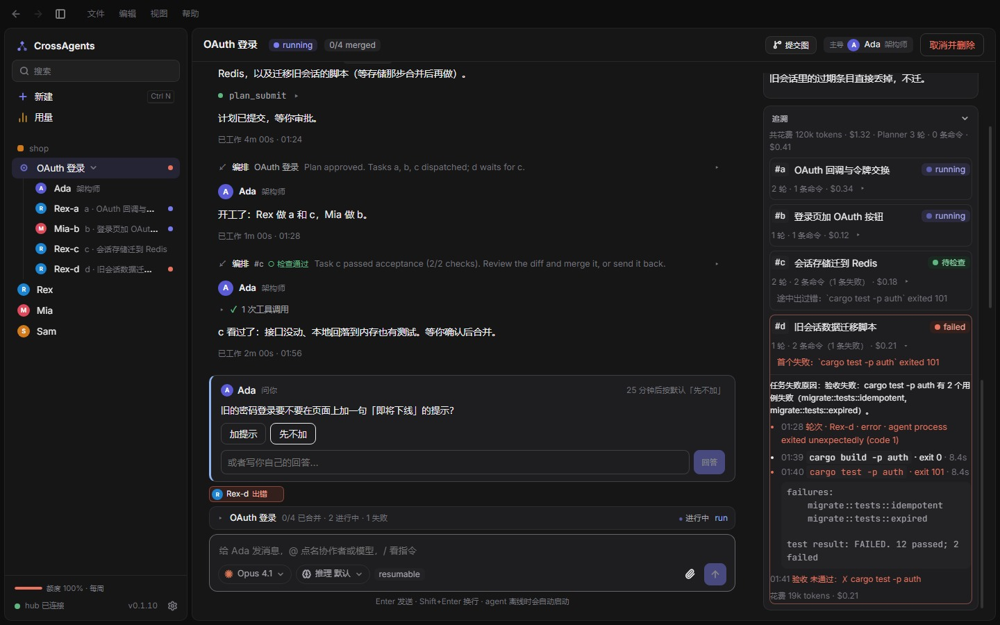
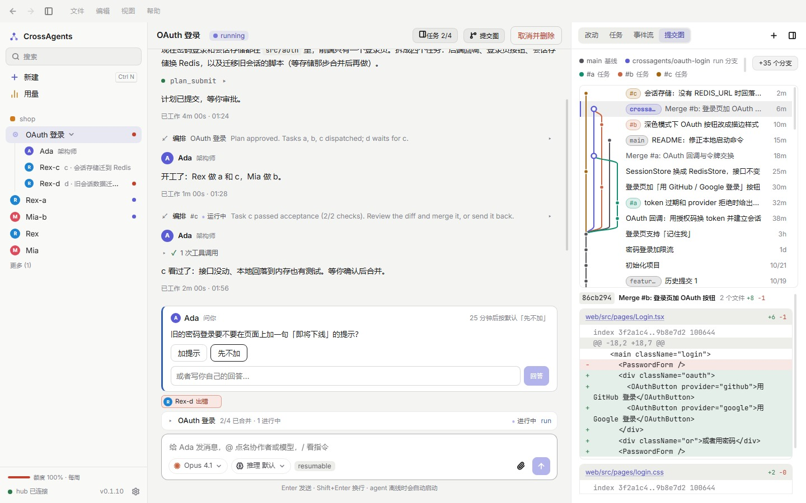

让编码 agent
组成一个团队
Coding agents,
working as one team
Claude Code、Codex、WorkBuddy 和任何讲 ACP 的 agent，在同一个对话里互相招人、分工、交接、审查。每个任务在独立的 git worktree 里做，hub 亲自跑验收；落不落地，由你决定。 Claude Code, Codex, WorkBuddy and any ACP agent recruit each other, split the work, hand off and review in one conversation. Every task runs in its own git worktree, the hub runs the acceptance checks itself, and you decide what lands.
你说要什么，团队自己把它做完You say what you want. The team gets it done.
主导拆计划、招队友；队友并行干活、卡住了自己想办法；你只在关键的地方拍板。The lead plans and recruits, teammates work in parallel and sort out their own setbacks, and you step in only where it matters.
主导读代码、拆计划The lead reads the code and plans
需求被拆成几个任务，每个带规格和验收命令，指派给合适的队友。你可以改派任何一个任务，再选托管程度。The request becomes tasks, each with a spec and acceptance commands, assigned to the right teammate. Reassign any of them, then pick how hands-off to be.
- 「我审批」：计划、问题、落地都等你You approve: plan, questions and landing wait for you
- 「半托管」「全托管」：放手让它跑，有预算和时间上限兜底Semi or fully managed: let it run, bounded by budget and time
卡住了，自己想办法Stuck? It routes around it
验收没过就打回重做；反复失败就升级给更强的队友；账号额度用完就换一个账号。每次交接都留在任务卡上：谁交给谁、为什么。Failed checks go back for rework. Repeated failures escalate to a stronger teammate. An exhausted account hands off to another. Every handoff stays on the task card: who, to whom, and why.
拿不准的事，agent 会在对话里给出选项问你；超时就按默认走，不会干等。When an agent is unsure, it asks you with options in the chat. If you don't answer in time, it takes the default instead of waiting.

你来审，你来落地You review. You land.
任务完成后看整份 diff，点行号写意见，一键发给 worker 或打回重做。所有任务合进 run 分支后，最后要不要落到 main，由你决定。Read each finished task's whole diff, comment on any line, and send it to the worker or back for rework. Once everything is merged into the run branch, you decide whether it lands on main.
出了问题，看得见为什么When something fails, you see why
不用翻日志，也不用猜 agent 干了什么。No digging through logs, no guessing what an agent did.


也可以只和一个 agent 聊Or just talk to one agent
不用开 run，直接找一个队友。工具调用折成一行，正在跑的命令输出实时可见，新消息自动排在本轮之后。右侧是上下文占用、缓存命中和花费。No run needed: talk to a teammate directly. Tool calls fold into one line, running commands stream live, and new messages queue after the current turn. Context use, cache hits and cost sit on the right.
每个任务一个 worktreeA worktree per task
并行不打架；修改范围重叠的任务自动串行。Parallel without collisions; overlapping tasks run in turn.
hub 亲自验收The hub checks the work
agent 说做完了不算，验收命令跑过才算；只合并验过的那个提交。"Done" means the acceptance commands passed, and only the verified commit is merged.
多账号与额度Accounts and quota
同一家可以挂多个账号，实时看套餐、额度和重置时间。Several accounts per vendor, with live plan, quota and reset times.
只在本机Local only
hub 只监听 127.0.0.1，令牌不会进页面，也不会写进日志。The hub listens on 127.0.0.1 only; tokens never reach the page or the logs.
危险操作要你批Risky actions need you
agent 想 git push 之类，先停下来等你允许或拒绝。Things like git push stop and wait for you to allow or deny.
断了能接上Picks up where it left off
agent 进程退出、应用重启后，会话可以恢复，接着干。Sessions resume after an agent exits or the app restarts.
三步开始Three steps to start
需要 Windows 10 或 11，以及你要用的 agent 的账号。You need Windows 10 or 11 and an account for the agents you want to use.
下载并安装Download and install
运行 CrossAgents-Setup-<版本>.exe。安装包自带对应版本的 hub，打开应用时会自动启动。Run CrossAgents-Setup-<version>.exe. It includes the matching hub, which the app starts for you.
登录 agentSign in to an agent
- Claude Code：
claude auth login - Codex：
codex login，或在应用里导入现有登录, or import an existing login in the app - WorkBuddy：安装 CodeBuddy CLI 后用
/logininstall the CodeBuddy CLI, then/login
招队友，开工Add teammates, start
在应用里新建队友、选好模型，说出你想做什么就行。Add a teammate in the app, pick a model, and say what you want done.
安装包还没有代码签名，第一次运行时 SmartScreen 可能提示，点「更多信息 → 仍要运行」即可。The installer isn't code-signed yet; if SmartScreen warns the first time, choose "More info → Run anyway".